Part 1: Selfie
I first took a selfie from very close (About 10cm) to my face, then stepped farther back (About 80cm) and zoomed in to ensure that my face stayed the same size in the frame.
The improvement comes mostly from changing the camera position, not from zoom itself. When the camera is close, nearby parts of the face are magnified much more than farther parts, causing "Distortion". Moving back reduces this perspective distortion, and zooming in only restores the framing.
Part 2: Architectural Perspective Compression
For the building scene, I photographed the facade from farther away while zoomed in, then walking straightly and zoomed out to keep the building a similar size.
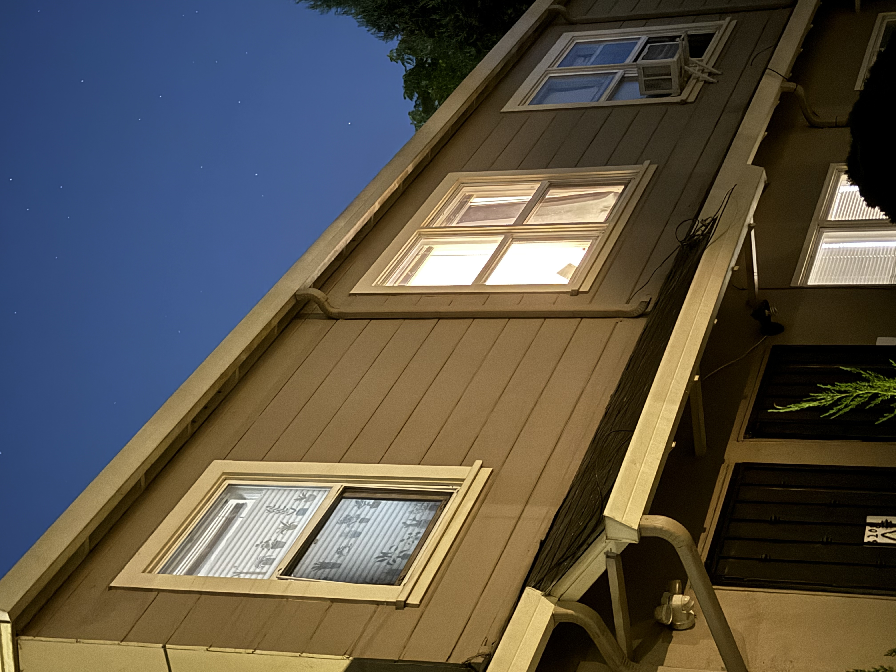
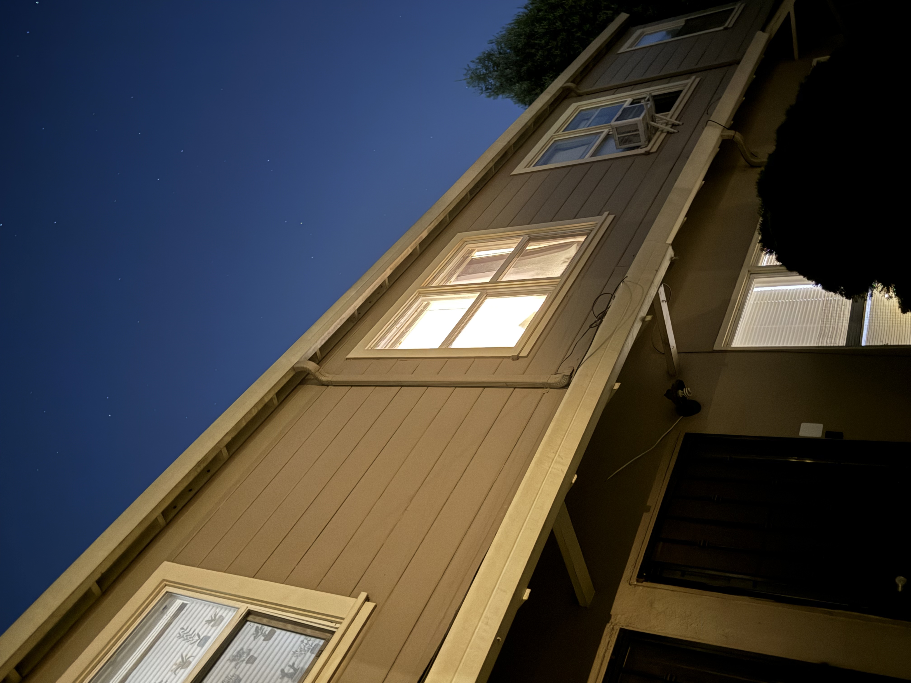
From far away, objects at different depths are all relatively similar distances from the camera, so the scene looks flatter. From close up, distance differences matter more, so the facade shows stronger perspective.
Part 3: Dolly Zoom
I combined a sequence of still photos into a dolly zoom GIF. During the sequence, the camera moves while the zoom changes to keep the main subject close to the same size.
I first tried using a plain wall as the background, but the effect was not very obvious. I then switched to a scene with a clearer background, which created more visual contrast and made the dolly zoom effect easier to see.
The dolly zoom works because camera movement changes perspective, while zoom changes framing. Combining the two creates a noticeable change in the background even when the subject remains visually stable.
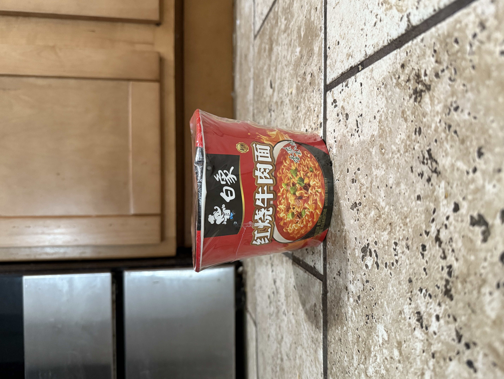
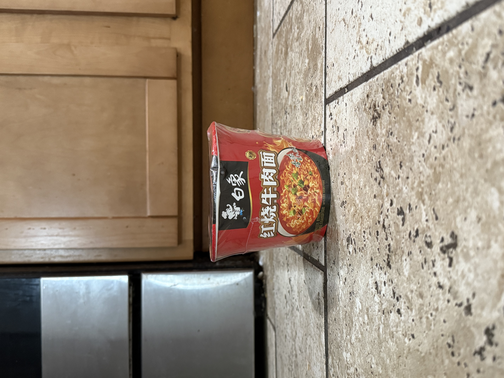
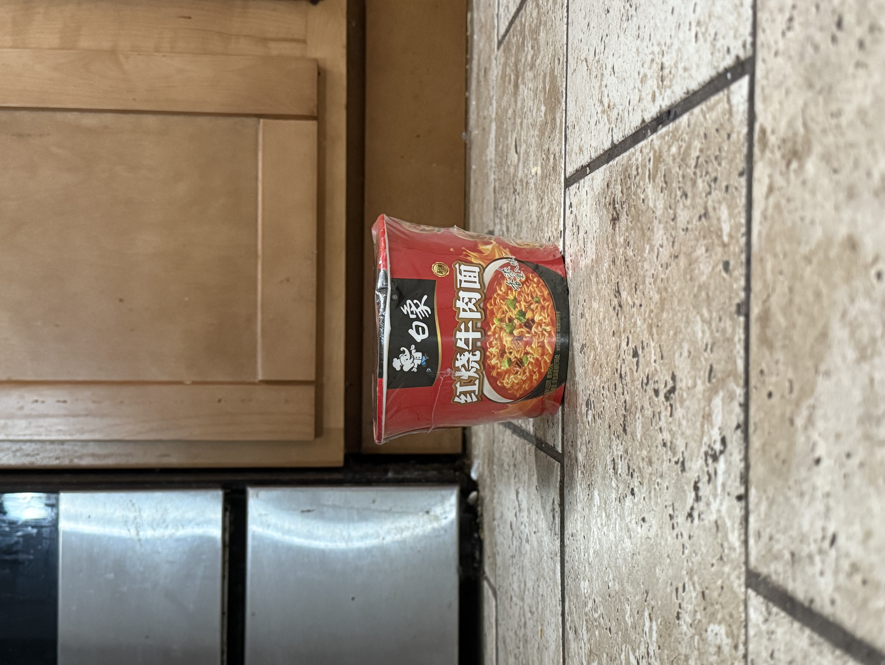
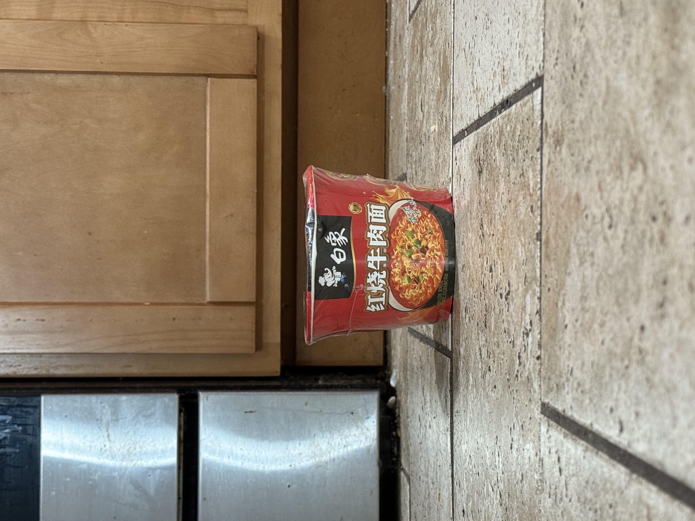
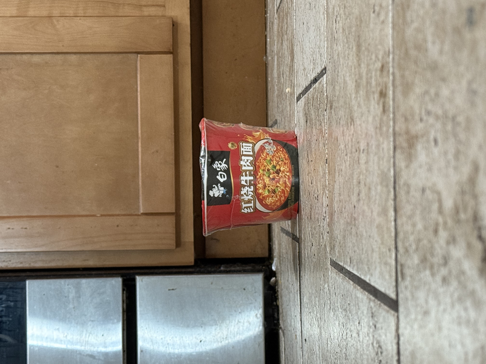
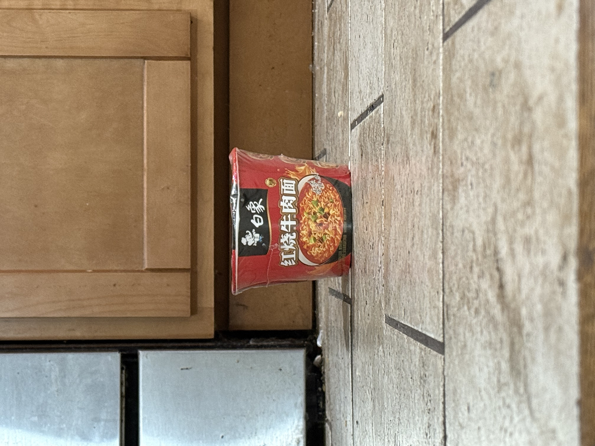
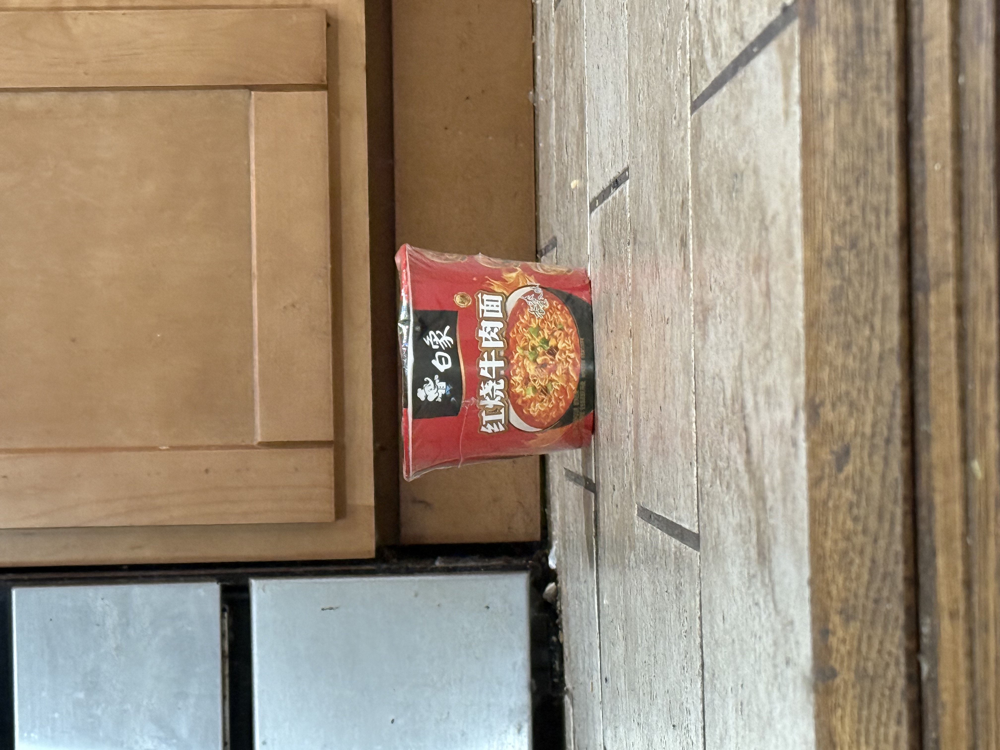
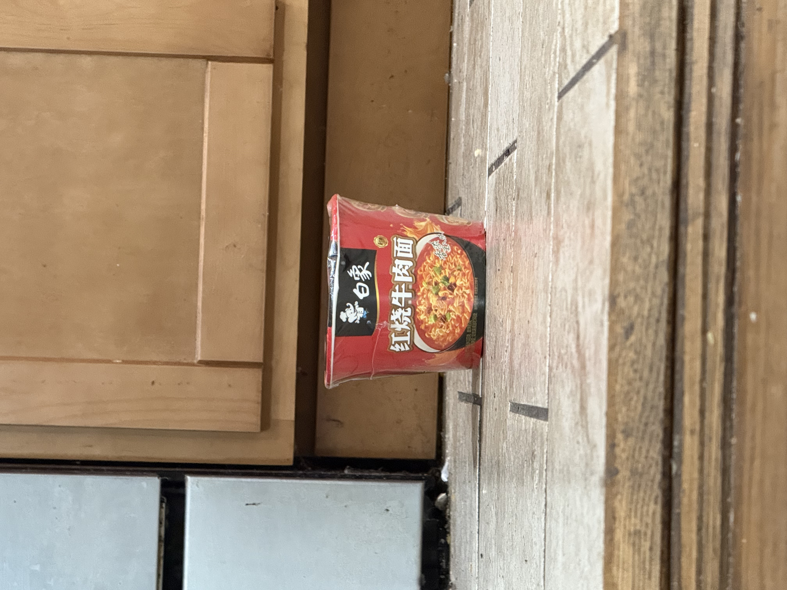
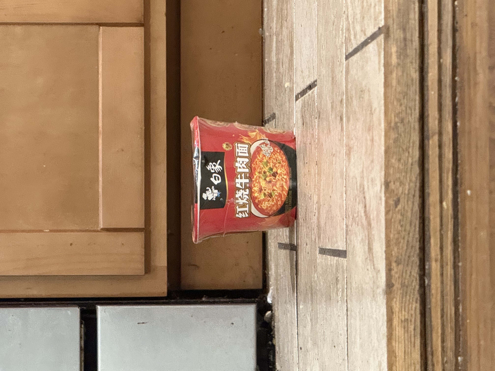